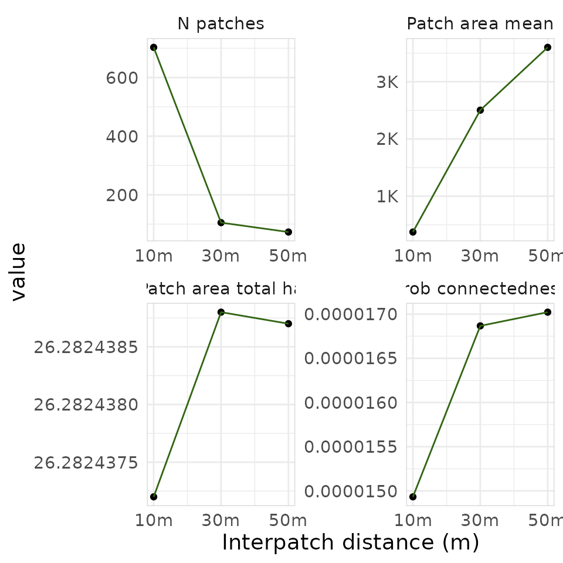

library(urbioconnect)
library(terra)
#> terra 1.9.50Overview
urbioconnect implements the habitat connectivity method
described in Kirk et al. (2023):
Kirk, H., Soanes, K., Amati, M., Bekessy, S., Harrison, L., Parris, K., Ramalho, C., van de Ree, R., & Threlfall, C. (2023). Ecological connectivity as a planning tool for the conservation of wildlife in cities. MethodsX, 10, 101989. https://doi.org/10.1016/j.mex.2022.101989
The core idea is two habitat patches are considered connected if an animal can travel between them without crossing a barrier (e.g., a road). We buffer the habitat by a species-specific interpatch distance, then cut those buffers wherever barriers exist. The remaining pieces of habitat that are connected become patches, and we summarise their areas to compute connectivity metrics. This workflow is represented visually in the figure below, from the paper by Kirk et al.:

This vignette walks through the raster workflow step by step using the built-in Blue-tongued Lizard example data from Darebin Creek, Melbourne. We then show how to run the same workflow in a single function call.
The example data
The package ships with habitat and barrier rasters for a Blue-tongued Lizard study area along Darebin Creek, between Preston and West Heidelberg, Melbourne.
habitat <- example_habitat()
barrier <- example_barrier()
habitat
#> class : SpatRaster
#> size : 763, 766, 1 (nrow, ncol, nlyr)
#> resolution : 2, 2 (x, y)
#> extent : 326109.6, 327641.6, 5820362, 5821888 (xmin, xmax, ymin, ymax)
#> coord. ref. : GDA94 / MGA zone 55 (EPSG:28355)
#> source : lizard_habitat_raster.tif
#> name : Pseudo Layer
#> min value : 1
#> max value : 1
barrier
#> class : SpatRaster
#> size : 763, 766, 1 (nrow, ncol, nlyr)
#> resolution : 2, 2 (x, y)
#> extent : 326109.6, 327641.6, 5820362, 5821888 (xmin, xmax, ymin, ymax)
#> coord. ref. : GDA94 / MGA zone 55 (EPSG:28355)
#> source : lizard_barrier_raster.tif
#> name : layer
#> min value : 0
#> max value : 1The habitat raster has value 1 where lizard habitat exists, NA elsewhere.
plot(habitat, main = "Lizard Habitat", col = "seagreen", legend = FALSE)
The barrier raster has value 1 where barriers (roads exist), 0 elsewhere.

We can see these overlaid:
plot(barrier, main = "Lizard Habitat and Barrier", col = c("white", "black"), legend = FALSE)
plot(habitat, col = "seagreen", add = TRUE, legend = FALSE)
The dispersal distance for the blue-tongued lizard in this environment is normally 1,000m, which suggess a interpatch_distance of 500 m – half the connectivity threshold. This means two patches are considered connected if the outside most edges are within 500 metres of each other.
While 500m is most accurate, the examples below use a smaller interpatch distance to increase computational speed.
The pipeline, step-by-step
Let’s now break down each step in the pipeline:
- Create barrier mask
- Remove habitat under barriers
- Buffer the habitat
- Fragment habitat along barriers
- Assign patch IDs
- Summarise patch areas
Step 1: Create the barrier mask
create_barrier_mask() converts the barrier raster (1 =
barrier, NA = passable) into a multiplier mask (NA = barrier, 1 =
passable). This format lets us block movement when we multiplying layers
together.
barrier_mask <- create_barrier_mask(barrier)
plot(barrier_mask, col = c("grey"), legend = FALSE)
Step 2: Remove habitat under barriers
Habitat sitting directly beneath a barrier is removed before analysis. Roads bisecting a habitat patch effectively remove the habitat for connectivity purposes. We can see here below where the habitats have been removed - the green spaces are habitat kep, and the orange ones are habitat that intersected with barriers.
remaining_habitat <- drop_habitat_under_barrier(
habitat = habitat,
barrier_mask = barrier_mask
)
plot(barrier_mask, col = c("grey"), legend = FALSE)
plot(habitat, col = "#d95f02", legend = FALSE, add = TRUE)
plot(remaining_habitat, col = "#1b9e77", legend = FALSE, add = TRUE)
Step 3: Buffer the habitat
habitat_buffer() expands the habitat outward using a
circular focal window. This is the spatial operation of buffering, which
we use to represent the interpatch distance - here the
buffer_radius should be half the species’
connectivity threshold. For example, if two patches are considered
connected when within 200 m of each other, use a 100 m buffer, as the
buffers overlap when patches are within 200 m. For the blue-tongued
lizard in urban Melbourne, the median dispersal distance is 1000 m (Kirk
et al., 2023), so we would use a buffer of 500 m. However, we use 10 for
a faster demonstration on the small example dataset, and will define
both interpatch_distance and buffer_radius at
the same time.
interpatch_distance <- 10
buffer_radius <- interpatch_distance / 2
buffered_habitat <- habitat_buffer(
habitat = remaining_habitat,
buffer_radius = buffer_radius
)
#> Warning: Buffer radius doesn't align with the raster resolution.
#> ✖ 5 m isn't a multiple of 2 m.
#> ℹ It snaps to 4 m (interpatch distance 8 m).
#> ℹ Connectivity may shift for patches near the cut-off.
#> ℹ See `vignette(urbioconnect::interpatch-distance-and-resolution)`.
plot(barrier_mask, col = scales::alpha("grey", 1), legend = FALSE)
plot(buffered_habitat, col = "darkgreen", legend = FALSE, add = TRUE)
plot(remaining_habitat, col = "#1b9e77", legend = FALSE, add = TRUE)
We can now visualise the three layers together using
gg_barrier_habitat_interpatch_dist():
gg_barrier_habitat_interpatch_dist(
barrier = barrier,
buffered = buffered_habitat,
habitat = remaining_habitat,
interpatch_distance = interpatch_distance,
species = "Blue-tongued Lizard",
col_barrier = "grey30",
col_interpatch_dist = "lightgreen",
col_habitat = "#1b9e77",
col_paper = "white"
)
#> <SpatRaster> resampled to 500554 cells.
#> <SpatRaster> resampled to 500554 cells.
#> <SpatRaster> resampled to 500554 cells.
Step 4: Fragment habitat along barriers
fragment_habitat() cuts the buffered habitat wherever a
barrier cell exists. This is the step that disconnects patches separated
by roads.
fragmented <- fragment_habitat(
buffered_habitat = buffered_habitat,
barrier_mask = barrier_mask
)
fragmented
#> class : SpatRaster
#> size : 763, 766, 1 (nrow, ncol, nlyr)
#> resolution : 2, 2 (x, y)
#> extent : 326109.6, 327641.6, 5820362, 5821888 (xmin, xmax, ymin, ymax)
#> coord. ref. : GDA94 / MGA zone 55 (EPSG:28355)
#> source(s) : memory
#> varname : lizard_habitat_raster
#> name : focal_max
#> min value : 1
#> max value : 1Step 5: Assign patch IDs
assign_patches_to_fragments() labels each habitat cell
with an integer identifying which connected patch it belongs to. Habitat
cells that share a fragment blob get the same patch ID.
patch_id_raster <- assign_patches_to_fragments(
remaining_habitat = remaining_habitat,
fragment = fragmented
) |>
add_patch_area()
patch_id_raster
#> class : SpatRaster
#> size : 763, 766, 2 (nrow, ncol, nlyr)
#> resolution : 2, 2 (x, y)
#> extent : 326109.6, 327641.6, 5820362, 5821888 (xmin, xmax, ymin, ymax)
#> coord. ref. : GDA94 / MGA zone 55 (EPSG:28355)
#> source(s) : memory
#> varnames : lizard_habitat_raster
#> lizard_habitat_raster
#> names : patch_id, area
#> min values : 1, 4.000221
#> max values : 1355, 4.000273add_patch_area() appends a cell-area layer to the
raster, which is needed for the area calculations in the next step.
We can plot the patches, with each connected patch shown in a
distinct colour using plot_patches():
plot_patches(
patch_id = patch_id_raster,
interpatch_distance = interpatch_distance,
species = "Blue-tongued Lizard"
)
#> <SpatRaster> resampled to 500554 cells.
Step 6: Summarise patch areas
aggregate_connected_patches() collapses the raster down
to one row per patch, summing the area of all habitat cells within that
patch.
areas_connected <- aggregate_connected_patches(patch_id_raster)
areas_connected
#> # A tibble: 703 × 3
#> patch_id area area_squared
#> <dbl> <dbl> <dbl>
#> 1 1 60.0 3600.
#> 2 2 1648. 2716264.
#> 3 7 12.0 144.
#> 4 8 1200. 1440195.
#> 5 10 92034. 8470191653.
#> 6 11 40.0 1600.
#> 7 12 288. 82955.
#> 8 28 1156. 1336497.
#> 9 30 64.0 4096.
#> 10 31 940. 883705.
#> # ℹ 693 more rowsThe result has three columns:
-
patch_id- integer identifier for the connected patch -
area- total habitat area within the patch (square metres) -
area_squared- squared area, used in the connectivity metrics below
Computing connectivity metrics
summarise_connectivity() takes the patch area data and
computes a set of landscape-level connectivity metrics:
results <- summarise_connectivity(
connectivity = areas_connected$area,
interpatch_distance = interpatch_distance,
data_resolution = 10,
species = "Blue-tongued Lizard"
)
results
#> # A tibble: 1 × 9
#> species interpatch_distance n_patches effective_mesh_ha prob_connectedness
#> <chr> <dbl> <int> <dbl> <dbl>
#> 1 Blue-tongu… 10 703 3.92 0.0000149
#> # ℹ 4 more variables: patch_area_mean <dbl>, patch_area_total_ha <dbl>,
#> # data_resolution <dbl>, patch_size <list>The two key metrics are:
Effective mesh size (ha) - the average area of the patch a randomly chosen animal finds itself in. Larger values mean better connectivity:
Probability of connectedness - the probability that two randomly chosen points within habitat are in the same connected patch. Ranges from 0 (fully fragmented) to 1 (all habitat connected):
Where is the area of a given patch.
Run the pipeline as a single step
We developed each step of the pipeline as a set of functions that can
be run individually. If you would like to run it all in one step, you
can run habitat_connectivity(). Note the messages noting
the step, and time taken. You can control this by setting
verbose to FALSE if you do not want the loading/running
messages.
areas <- habitat_connectivity(
habitat = habitat,
barrier = barrier,
species = "Blue-tongued Lizard",
interpatch_distance = interpatch_distance,
verbose = TRUE
)
#> ℹ Creating barrier mask
#> ✔ Creating barrier mask [33ms]
#>
#> ℹ Removing habitat underneath barrier
#> ✔ Removing habitat underneath barrier [25ms]
#>
#> ℹ Adding 5m buffer (interpatch distance 10m)
#> Warning: Buffer radius doesn't align with the raster resolution.
#> ✖ 5 m isn't a multiple of 2 m.
#> ℹ It snaps to 4 m (interpatch distance 8 m).
#> ℹ Connectivity may shift for patches near the cut-off.
#> ℹ See `vignette(urbioconnect::interpatch-distance-and-resolution)`.
#> ✔ Adding 5m buffer (interpatch distance 10m) [316ms]
#>
#> ℹ Fragmenting habitat layer along barrier intersection
#> ✔ Fragmenting habitat layer along barrier intersection [24ms]
#>
#> ℹ Assigning patches ID to fragments
#> ✔ Assigning patches ID to fragments [2.2s]
#>
#> ℹ Summarising area in each patch
#> ✔ Summarising area in each patch [54ms]
#>
areas
#> # A tibble: 1 × 9
#> species interpatch_distance n_patches effective_mesh_ha prob_connectedness
#> <chr> <dbl> <int> <dbl> <dbl>
#> 1 Blue-tongu… 10 703 3.92 0.0000149
#> # ℹ 4 more variables: patch_area_mean <dbl>, patch_area_total_ha <dbl>,
#> # data_resolution <chr>, patch_size <list>areas is a connectivity object: a one-row
landscape summary containing the same kind of metrics we computed by
hand above (n_patches, effective_mesh_ha,
prob_connectedness, and so on). The per-patch areas that
summary is built from travel with it in a list-column, and can be pulled
out with patch_sizes():
patch_sizes(areas)[[1]]
#> # patch_size_tbl: data.frame
#> # Species: Blue-tongued Lizard
#> # Patches: 703
#> # Resolution: 2x2
#> # Interpatch Distance: 10 m
#> patch_id area
#> <dbl> <dbl>
#> 1 1 60.0
#> 2 2 1648.
#> 3 7 12.0
#> 4 8 1200.
#> 5 10 92034.
#> # ℹ 698 more rowsThe package also includes a pre-computed per-patch table (at 50 m
interpatch distance) as lizard_areas_connected, equivalent
to patch_sizes(habitat_connectivity(...))[[1]]:
lizard_areas_connected
#> # patch_size_tbl: data.frame
#> # Species: Blue-tongued Lizard
#> # Patches: 73
#> # Resolution: 2x2
#> # Interpatch Distance: 50 m
#> patch_id area
#> <dbl> <dbl>
#> 1 1 172.
#> 2 2 1592.
#> 3 7 98006.
#> 4 9 2416.
#> 5 10 1304.
#> # ℹ 68 more rowsIf you need the intermediate rasters for mapping or reporting, use
habitat_connectivity_full() instead. It returns a named
list containing the buffered habitat, patch ID raster, barrier mask,
remaining habitat, and the areas_connected data frame:
result <- habitat_connectivity_full(
habitat = habitat,
barrier = barrier,
interpatch_distance = interpatch_distance,
verbose = FALSE
)
names(result)
#> [1] "buffered_habitat" "patch_id_raster" "areas_connected"
#> [4] "barrier_mask" "remaining_habitat"Comparing multiple interpatch distances
A common workflow is to run the analysis at several interpatch
distances and compare the results. Use purrr::map() to
iterate, then purrr::list_rbind() to combine:
interpatch_distances <- c(10, 30, 50)
buffered_radiuses <- interpatch_distances / 2
all_results <- purrr::map(
interpatch_distances,
function(d) {
habitat_connectivity(
habitat = habitat,
barrier = barrier,
species = "Blue-tongued Lizard",
interpatch_distance = d,
verbose = FALSE
)
}
) |>
purrr::list_rbind()
all_results
#> # A tibble: 3 × 9
#> species interpatch_distance n_patches effective_mesh_ha prob_connectedness
#> <chr> <dbl> <int> <dbl> <dbl>
#> 1 Blue-tongu… 10 703 3.92 0.0000149
#> 2 Blue-tongu… 30 105 4.43 0.0000169
#> 3 Blue-tongu… 50 73 4.47 0.0000170
#> # ℹ 4 more variables: patch_area_mean <dbl>, patch_area_total_ha <dbl>,
#> # data_resolution <chr>, patch_size <list>Each call to habitat_connectivity() already returns a
one-row summary, so purrr::list_rbind() stacks them
directly – there’s no separate summarise_connectivity()
step needed here.
With multiple buffer distances you can visualise how connectivity
changes using plot_connectivity():
plot_connectivity(all_results)
plot_connectivity() produces a faceted ggplot2 figure
showing each connectivity metric (number of patches, probability of
connectedness, mean patch area, total habitat area) as a function of
interpatch distance.
Summary
The core raster workflow in urbioconnect is:
-
create_barrier_mask()- invert the barrier raster into a passability mask -
drop_habitat_under_barrier()- remove habitat beneath barriers -
habitat_buffer()- expand habitat by the interpatch distance (half the connectivity threshold) -
fragment_habitat()- cut the buffer where barriers exist -
assign_patches_to_fragments()+add_patch_area()- label and measure connected patches -
aggregate_connected_patches()- summarise patch areas -
summarise_connectivity()- compute effective mesh size and probability of connectedness
Or, equivalently, use habitat_connectivity() for the
one-row landscape summary (with per-patch data available via
patch_sizes()), or habitat_connectivity_full()
when you also need the intermediate rasters.